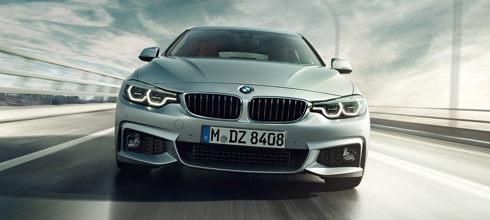

Autos
Son los vehículos preferidos por muchos, e independientemente de sus características son elegidos en gran mayoría por el techo abatible. Obviamente, no son el mejor modelo para llevar en lugares lluviosos o donde hay mal tiempo habitualmente.
Pickups
La camioneta está destinada a la carga, pero es menor que un camión, lo que permite un mejor y más fácil movimiento para trasladar pesos. Dependiendo de las cargas que se deban manejar, es más conveniente que otros vehículos de carga más grandes, pues es más fácil de manejar y ocupa menos espacio.
Camiones

El DF-1016L se caracteriza principalmente por que cuenta con un motor CUMMINS con una potencia de 160 HP y cilindrada de 3,800 cc. Todo esto permite un consumo más moderado del combustible debido a su equipamiento que incluye un sistema de inyección Common Rail. Además, cumple con los requisitos de la norma de emisiones contaminantes Euro IV.